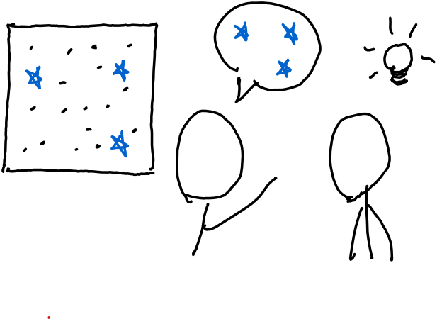
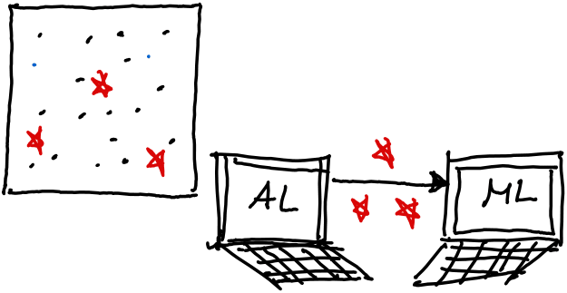
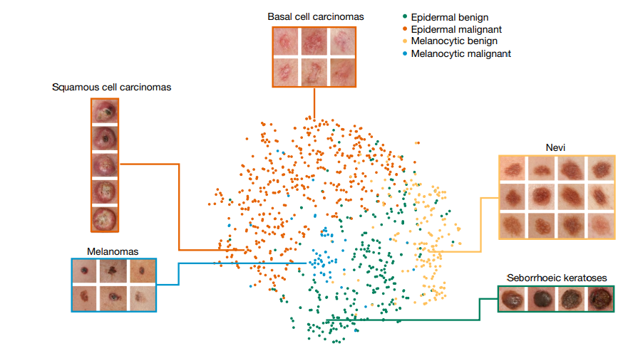

When teaching something new to someone, we often have the intuition that with the right examples, the person will learn faster.
In machine learning, finding the best points to train an algorithm is called Active Learning (AL).
 Given some data $\mathcal{D}$ and model knowledge $ f_{\theta} = ML(\mathcal{D})$, the goal of active learning is to find the best datapoints $\mathcal{D}^{\mathcal{H} \in \mathcal{D} $ that will maximize the performance of our model. $f_{\theta} = ML(\mathcal{D}^*_{\mathcal{L}})$.Often, ML and humans are called to solve the same tasks:
For example, both medical students and algorithms learn to distinguish cancerous and benign images. Hence, we can easily hypothesize that their are helpful points for humans $\mathcal{D}^{\mathcal{H} \in \mathcal{D} $ , and helpful points for algorithms $\mathcal{D}^{\mathcal{A} \in \mathcal{D} $ .
Solving for $\mathcal{D}^*_{\mathcal{L}}$ or modeling a human might be too hard.
Instead of solving: $$ \mathcal{D}^*_{\mathcal{L}} = argmax_{\mathcal{D}_{\mathcal{L}} \in \mathcal{D}} \Big(\blacksquare(\mathcal{D}_{\mathcal{L}} )\Big) $$ we find the best points for some ML algorithm $f_{\theta}$: $$ \mathcal{D}^*_{\mathcal{L}} = argmax_{\mathcal{D}_{\mathcal{L}} \in \mathcal{D}} s \Big(f_{\theta}(\mathcal{D}_{\mathcal{L}} )\Big) $$ and check if $ \mathcal{D}^*_{\mathcal{L}}$ can still be useful for $\blacksquare$ (us). $\rightarrow$ we compare $f^{ \mathcal{D}^*_{\mathcal{L}}}_{\blacksquare}$ vs $f^{\mathcal{D}^{random}_{\mathcal{L}} }_{\blacksquare}$ (initial experiment)
The experiment: